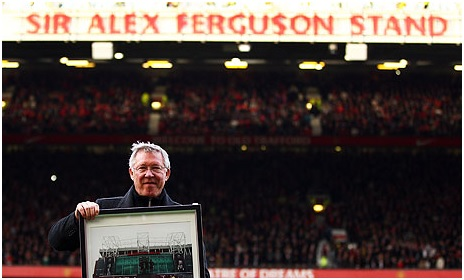
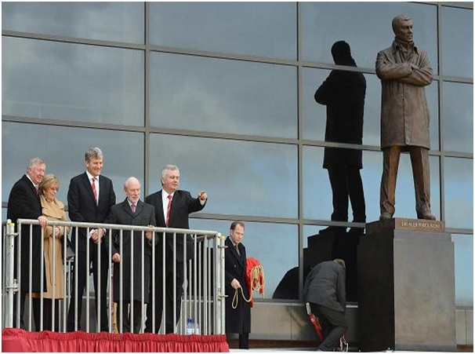

Chương 41

è 2011,cảm thấy các cầu thủ trưởng thành từ tuyến trẻ như Danny Welbeck và Tom Cleverley đã đạt độ chín, Sir Alex Ferguson quyết định tin dùng họ trên đội một, thay vì đem cho các CLB khác mượn như vài mùa vừa qua. Ông cũng mua về thủ môn David De Gea, tiền vệ cánh Ashley Young, và hậu vệ đa năng Phil Jones. Được kỳ vọng nhiều nhất là De Gea, người giữ đền với phản xạ tuyệt hảo. Tuy thế, anh hãy còn trẻ, hay mắc sai lầm, cần học hỏi nhiều trước khi có thể sánh cùng Van Der Sar. Thấy De Gea cao mà ốm lòng khòng, BHL CLB phải thiết kể riêng những bài tập thể lực cho anh, nhằm giúp thủ thành người TBN phát triển thêm về cơ bắp.
United khởi đầu mùa giải mới như mơ, thắng liên tiếp năm trận.Trong số nạn nhân của họ có cả Chelsea và Arsenal. Chelsea chịu thua 1-3, còn Arsenal thất trận với tỷ số kinh hoàng 2-8 (Rooney lập hattrick, Young ghi hai bàn). Đây là trận thắng đậm nhất của United trước Arsenal trong lịch sử, và cũng là lần đầu tiên Pháo Thủ thua thảm hại đến vậy, kể từ lần phơi áo 0-8 trước Loughborough Town năm…1896! Về cuối trận, Sir Alex nhìn bộ mặt thiểu não của Arsene Wenger mà động lòng, thầm mong các học trò dừng lại, đừng ghi bàn thêm nữa.
Không ngờ, “thăng thiên” nhanh thì “hạ thổ” cũng nhanh. Đến tháng 10, United bị Manchester City đánh bại với tỷ số cũng kinh hoàng không kém: 6-1. Trận này, chính Quỷ Đỏ là đội chiếm ưu thế trong hiệp đầu, song không tận dụng được cơ hội, đến lúc Jonny Evans lĩnh thẻ đỏ rời sân thì gió đổi chiều. Khi tỷ số đang là 1-3 nghiêng về City, Ferguson chơi đòn “được ăn cả, ngã về không”, xua quân tấn công không thèm phòng ngự, dẫn đến việc thua tiếp ba trái chỉ trong vòng vài phút cuối. Sau trận thảm bại, đội lao đao, chuệch choạc hẳn trên cuộc đua đến ngôi vương.
Giữa tình thế khó khăn, United tạm quên những căng thẳng, áp lực, để tổ chức ngân khánh, kỷ niệm 25 năm ngày Sir Alex đặt chân tới Old Trafford. Nhằm tôn vinh Sir, BLĐ CLB nhất trí đặt tên Ferguson cho khán đài phía Bắc SVĐ. Theo kế hoạch, dòng chữ “Old Trafford Manchester” trước khán đài sẽ được thay bằng “Sir Alex Ferguson Stand”. Muốn gây bất ngờ cho Fergie, David Gill ra lệnh tiến hành mọi việc trong vòng bí mật. Tối thứ năm, ngày 3 tháng 11, 2011, khi Old Trafford vắng tanh, không còn ai, tốp thợ sáu người bắt tay vào việc, đến hai giờ sáng thì hoàn tất. Thay xong dòng chữ, họ dùng vải che lại. Ngày hôm sau, mọi người thấy vải che mà không ai hiểu tại sao.
Thứ bảy, 5 tháng 11, Manchester United gặp Sunderland, Ferguson ra sân giữa tràng vỗ tay như sấm dậy của cầu thủ và CĐV hai bên. Sunderland có đến bốn cầu từng khoác áo United: O’Shea, Brown, Bardsley, và Richardson. Cả bốn cùng chạy đến tay bắt mặt mừng, chia vui cùng thầy cũ. David Gill bắt Sir Alex quay mặt về hướng Nam, nghe mình đọc một bài diễn văn, sau đó mới cho ông quay lại, vừa lúc tấm vải đã được tháo xuống, để lộ dòng chữ mới trên khán đài. Sir bất ngờ tột đột, cảm thấy nghẹn lời. “Ôi! Mình đâu xứng đáng được thế này!”, ông thầm nghĩ.
David Gill lại nghĩ khác. “Chúng em định dựng tượng bác”, ông thì thầm vào tai Sir, “Nhưng bác nghĩ có sớm quá không? Hay là đợi đến lúc bác về hưu?”

Sir Alex Ferguson trong lễ ngân khánh, trước khán đài mang tên mình (Ảnh: Theguardian.com)
Ngày vui qua, Ferguson trở về với thực tại, nghĩ cách cải thiện phong độ CLB. United mùa 2011-2012 có rất nhiều cầu thủ trẻ, đại diện cho một thế hệ mới, chẳng hạn như De Gea (21 tuổi), Phil Jones (19), Jonny Evans (23), Anderson (23), Chris Smalling (22), Fabio và Rafael (cùng 21), Tom Cleverley (22), Danny Welbeck (21)…Có điều, những cái tên nói trên hoặc vẫn đang phát triển, chưa phát huy hết được tiềm năng, hoặc khả năng chỉ có vậy, không thể sánh được với Thế Hệ Vàng. Đàn em đã thế, đàn anh thì nhiều người bỗng lăn ra chấn thương hoặc xuống phong độ. Berbatov giành danh hiệu Vua Phá Lưới xong bỗng dưng tịt ngòi, không mấy khi ghi bàn. Vidic, Ferdinand và Fletcher đều bị thương nặng. Trung vệ người Serbie cả mùa chỉ ra sân được đúng 10 lần.
Nhìn đâu cũng thấy vấn đề, Sir Alex không khỏi ngán ngẩm. Hàng công dù sao cũng còn khá, vì Rooney đã lấy lại phong độ, liên tiếp lập công, cả mùa phá lưới tổng cộng 34 lần, còn Hernandez vẫn có duyên ghi bàn mỗi khi ra sân từ ghế dự bị. Dưới hàng thủ, thay cho Ferdinand và Vidic chấn thương, Sir sử dụng Evans và Jones, không chắc bằng song chấp nhận được. Riêng tuyến tiền vệ thì xập xệ toàn diện, buộc Sir phải cầu viện Paul Scholes, nhờ anh tái xuất giúp đội.
Đã nghỉ cả nửa năm, Scholes vẫn khá sung sức. Anh không thể cứu vãn tình hình ở Cúp C1, bởi United đã bị loại trước đó, ngay từ vòng bảng, nhưng kịp truyền cảm hứng, giúp đội giành lại ngôi đầu giải Ngoại Hạng, có lúc bỏ khá xa City. Tuy nhiên, đến tháng 4, 2012, CLB lại “trật đường rày”. Thắng 1-0 trong trận derby lượt về, City một lần nữa vượt mặt đối thủ. Trước vòng đấu cuối cùng, hai đại kình địch bằng điểm nhau; City hơn về hiệu số. Muốn vô địch, United cần thắng Sunderland, và trông chờ City mất điểm trước QPR. Quỷ Đỏ làm được vế đầu tiên, vế thứ hai cũng… suýt thành sự thật. Suýt chứ chưa thành, vì City kịp ghi bàn vào phút… 94 để thắng QPR 3-2.
“Đừng để người ta thấy mình yếu đuối”, Ferguson động viên học trò, “Các con cứ ngẩng cao đầu, chẳng có gì phải xấu hổ cả”. Thật vậy, bình tâm mà xét, với lực lượng hiện có, United đứng thứ hai với 89 điểm, số điểm kỷ lục giành cho đội á quân, đã là quá giỏi[1]. Từ năm 1986, Fergie liên tục đánh bại 16 đời HLV City, nay đến đời thứ 17, Roberto Mancini, mới chịu thúc thủ một lần. Mà nói cho cùng, ông cũng chẳng thua Mancini, chỉ thua núi tiền Ả Rập. Từ khi đổi chủ, City đã chi gần nửa tỷ bảng để mua thành công, không vô địch cũng uổng!
Nói thì nói vậy, chứ mất cúp vào đúng phút- cuối- cùng -của- trận- cuối- cùng- của- vòng- cuối- cùng, ai mà không đau? Bà Cathy Ferguson vốn không mấy quan tâm bóng đá mà cũng suy sụp tinh thần. “Đó là ngày tệ nhất đời tôi”, bà chia sẻ, “Thêm một lần như thế chắc chết!” Sir Alex cũng cùng chung tâm trạng. Song là người có ý chí sắt đá, thất bại chỉ làm ông nung nấu thêm quyết tâm, quyết giành lại cúp trong mùa sau.
Đến kỳ chuyển nhượng, United chia tay Berbatov, Owen và Park Ji Sung, đón về Shinji Kagawa người Nhật và Robin Van Persie người Hà Lan. Đã lâu lắm, CLB mới ký hợp đồng với một ngôi sao thực thụ như Van Persie, trước đó chỉ mua toàn cầu thủ triển vọng và những anh chàng trung bình khá. Mùa vừa qua, Van Persie tỏa sáng rực rỡ, giành cả chức Vua Phá Lưới giải Ngoại Hạng lẫn phần thưởng cho Cầu Thủ Xuất Sắc (PFA và FWA). Vậy nhưng, do đã gần hết hợp đồng với Arsenal, và tuổi cũng không còn trẻ (29), giá chuyển nhượng anh chỉ có 22.5 triệu, không quá đắt[2].
Được coi là biểu tượng ở Arsenal, nên khi sang Old Trafford, Van Persie bị nhiều fan Pháo Thủ thù ghét, xem như một tên Judas phản Chúa. Không phải Persie không còn yêu Arsenal, chỉ là cầu thủ ai cũng khát danh hiệu. Giống như Sheringham trước đây, anh rời bỏ đội bóng đã gắn bó lâu năm để đi tìm cúp bạc VĐQG. Nhận được lời mời hậu hĩnh hơn từ Manchester City, Persie không chọn tiền, mà chọn lịch sử và truyền thống của United. Anh tin rằng dưới sự dẫn dắt của Ferguson, Quỷ Đỏ đủ sức phục thù City, giúp anh chạm đến chiếc cúp từ lâu khát khao. Về phần Arsene Wenger, ông chằng ưa gì Fergie, nhưng còn ghét bọn “trọc phú” hơn, cái bọn đã giựt mất của ông biết bao cầu thủ, từ Kolo Toure, Gael Clichy, Emmanuel Adebayor cho đến Sami Nasri. Nếu không thể giữ Van Persie, ông thà bán anh cho “quỷ”.
Sir Alex đánh giá Van Persie là “ánh sáng dẫn đường” trong mùa cuối ông dẫn dắt United. Để tận dụng bản năng sát thủ của Persie, Sir xếp anh đá trung phong, kéo Rooney lùi xuống hoặc dạt ra cánh. Với khả năng đá phạt chuẩn xác, cái chân trái chết người, và sở trường những cú volley đẹp như tranh, ngôi sao Hà Lan nhanh chóng chinh phục người hâm mộ. Những bàn thắng của anh là nhân tố chính giúp Quỷ Đỏ lên ngôi đầu bảng vào cuối tháng 11.
Cũng như mùa trước, United tổ chức hoạt động tôn vinh HLV trưởng vào cuối năm. Sáng thứ sáu, 23 tháng 11, 2012, tượng đồng Sir Alex được khánh thành. Tượng cao gần ba thước, tạo hình Ferguson đứng khoanh tay, sừng sững trước khán đài mang tên ông. Tác giả tượng là điêu khắc gia Philip Jackson, cũng chính là người đã tạc các tượng Sir Matt Busby và M.U. Tam Thánh. “Thường người ta chết rồi mới được dựng tượng”, Fergie hóm hỉnh, “Tôi thì may mắn thắng được Thần Chết”.
Ít lâu sau, một công trình lớn khác được đưa vào sử dụng: trung tâm y tế mới ở Carrington. Phí tổn xây dựng 25 triệu bảng, cộng thêm 13 triệu sắm sửa trang thiết bị, trung tâm này hiện đại, tối tân hơn hẳn cơ sở cũ, vừa là bệnh viện, vừa là viện nghiên cứu khoa học thể thao. Với đầy đủ đội ngũ y bác sỹ chuyên ngành, và máy móc các loại như máy chụp CT, chụp cộng hưởng từ, máy quét sóng siêu âm…trung tâm có thể thực hiện mọi chức năng như một bệnh viện thông thường, trừ việc giải phẫu. Từ đây, các cầu thủ chấn thương đều được đưa vào trung tâm khám và chữa trị, không cần ra bệnh viện bên ngoài, tránh việc lộ thông tin cho đối thủ.
Chính trong khoảng thời gian này, cuối 2012 đầu 2013, Ferguson nghĩ đến chuyện về hưu. Hưu thật, hưu hẳn, chứ không như lần trước. Ông đem ý định thổ lộ với vợ.
-Sao anh lại nghỉ? Bà Cathy hỏi.
-Thêm một lần như năm ngoái, mất chức vô địch vào trận cuối, chắc anh không chịu nổi nữa đâu. Anh chỉ hy vọng năm nay có thể vô địch Ngoại Hạng thêm một mùa, và vào chung kết Champions League hay Cúp FA gì đấy. Kết thúc như thế là đẹp.
Còn một lý do nữa Sir Alex không nói ra: Ông càm thấy mình đã bỏ bê gia đình quá nhiều. Sir cảm nhận được vợ mình đang rất cô đơn, đau khổ, sau cái chết gần đây của người chị gái Bridget, nên muốn giành nhiều thời gian ở bên, sẻ chia và chăm sóc cho bà. Cathy cũng không cản chồng như độ nọ. Bà nhận ra ông đã yếu hơn xưa, đã già thật rồi. Một ông lão ngoài 70 không còn thích hợp với công việc HLV, cái nghề đầy áp lực và đòi hỏi phải di chuyển nhiều.
Cố nhiên, Ferguson tạm thời giữ kín quyết định của mình, chỉ thông báo cho BLĐ CLB. Không hay biết điều chi, cầu thủ không bị phân tâm, tiếp tục thể hiện phong độ cao. United giữ vững ngôi đầu, bỏ xa các đối thủ cạnh tranh. Chỉ đáng tiếc là tại Cúp C1, đội bị loại từ vòng thứ hai. Gặp Real Madrid của cố nhân Ronaldo, một đội bóng trên cơ hoàn toàn, Quỷ Đỏ thi đấu đầy tự tin, hòa 1-1 ngay ở Bernabeu nhờ bàn thắng của Welbeck. Lượt về, họ vượt lên dẫn 1-0, chiếm thế thượng phong cho đến khi trọng tài rút một thẻ đỏ vu vơ, đuổi Nani ra khỏi sân. Về từ cõi chết, Real ghi liền hai bàn, đảo ngược thế cờ. Bàn thứ hai do chính Ronaldo ghi.
Trở lại giải VĐQG, không gì ngăn nổi United. Ngày 8 tháng 5, 2013, thấy đã cầm chắc ngôi vương, Ferguson tập hợp cầu thủ, BHL, cùng các nhân viên tại Old Traffordđể thông báo việc giải nghệ vào cuối mùa, chuyển sang làm giám đốc kiêm đại sứ cho United. “Có lẽ vài người trong số các con gia nhập CLB này vì nghĩ thầy còn tại chức lâu dài”, ông nói, nhắm vào Van Persie và Kagawa, “Hy vọng các con hiểu cho thầy. Chị vợ thầy qua đời, nên tình hình đột ngột biến chuyển. Vả lại, ra đi vào cuối mùa này, với tư cách một người chiến thắng, là lý tưởng nhất, đúng không?”
Dẫu đã nghe phong thanh tin đồn, các cầu thủ vẫn bàng hoàng. Cả thế giới cũng bàng hoàng theo, khi tin Ferguson về hưu đồng loạt xuẩt hiện trên trang nhất các nhật báo trên khắp toàn cầu. Vậy là Fergie, HLV tại vị lâu nhất trong lịch sử bóng đá Anh Quốc hiện đại[3] (gần 27 năm), cũng là HLV giàu thành tích nhất (38 danh hiệu lớn), rốt cuộc cũng rời ngai. Những tờ báo lớn ở Anh đều ra thêm phụ trương từ 10 đến 12 trang giành riêng cho sự kiện đặc biệt này.
Ngày 9 tháng 5, một ngày sau thông báo của Ferguson, United công bố danh tính HLV tương lai: David Moyes của Everton. Moyes là người được chính Sir Alex lựa chọn. Tuy chưa có danh hiệu gì, ông rất thành công trong 11 năm dẫn dắt Everton, từng đưa CLB trung bình này đứng hạng tư giải Ngoại Hạng, giành quyền dự Champions League. Có lẽ Sir Alex thấy ở Moyes hình ảnh của mình ngày xưa, khi còn nắm quyền tại các CLB nhỏ như East Stirlingshire và St Mirren. Cũng không nên quên Sir nói riêng, và người Scotland nói chung, có tinh thần “cục bộ địa phương” rất cao. Sir chọn Moyes, một phần không nhỏ vì Moyes là đồng hương.
Ngày 19 tháng 5, 2013, vòng cuối giải VĐQG, United gặp West Brom trên sân khách. Đây là trận cuối cùng, đồng thời là trận thứ 1500 Sir Alex Ferguson cầm cương Quỷ Đỏ. Trước ngày xung trận, các cầu thủ tặng lên HLV trưởng món quà chia tay: Chiếc đồng hồ Rolex sản xuất từ 1941, năm sinh Ferguson. Giờ trên đồng hồ được chỉnh vào lúc 3 giờ 3 phút chiều, tức đúng khoảnh khắc Fergie cất tiếng khóc chào đời. Đại diện báo giới tặng Sir Alex rượu vang hảo hạng, kèm chiếc bánh kem có hình máy sấy tóc!
United của Ferguson từ bao năm luôn nổi tiếng với những trận cầu kịch tính, không thể dự đoán. Trận cuối cùng cũng không là ngoại lệ. Quỷ Đỏ dẫn 5-2 cho đến phút 80, rồi để West Brom tung hoành như chốn không người, gỡ hòa 5-5 trong vòng những phút cuối. Chưa bao giờ tại giải Ngoại Hạng lại có một tỷ số quái lạ như thế. Trong 5 bàn của United có 1 do công Van Persie. Đó là bàn thứ 30 của anh tại các mặt trận, và thứ 26 riêng tại Premier League, giúp tiền đạo Hà Lan bảo vệ thành công danh hiệu Vua Phá Lưới.
Đánh rơi chiến thắng, song chẳng ai buồn, bởi chung cuộc, United vẫn bỏ xa á quân City đến 11 điểm. Có phải chăng những chàng học trò đã cố tình lỏng chân, để được sư phụ “sấy” thêm lần cuối? Nếu như thế, họ hẳn phải thất vọng, vì Sir Alex vẫn vui như tết. “Cám ơn các con”, Sir nói, “Các con tặng thầy món quà chia tay thật là dã man!”
Thời gian không dừng vì bất cứ ai, dù là thiên tài như Sir Alex Ferguson. Với Sir, một sự nghiệp huy hoàng đã kết thúc. Với Manchester United, một chương mới trong lịch sử lại bắt đầu.

Sir Alex và vợ trong ngày khánh thành tượng đồng Ferguson (Ảnh: Caughtoffside.com)
Chú thích:
[1] Trong quá khứ, United từng nhiều lần vô địch với số điểm ít hơn 89.
[2]Ferguson theo dõi Van Persie từ khi anh 16 tuổi. Năm 2004, ông tính mua anh từ Feyenoord, nhưng thất bại trước Arsenal.
[3] Chúng tôi ghi hai chữ “hiện đại”, vì HLV giữ kỷ lục tại vị lâu nhất của mọi thời là Fred Everiss, với 46 năm dẫn dắt West Brom từ 1902 đến 1948.